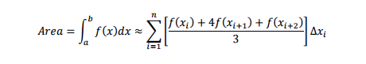
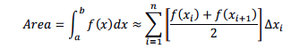
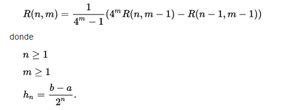

Metodos Numericos

Thomas Simpson
Algoritmo de Simpson
El Algoritmo de Simpson sustituye a la curva y=f(x) por una serie de arcos contiguos, cada uno de estos arcos es un arco de parábola de eje vertical. Esto nos lleva a aproximar el área bajo la curva mediante la suma de las áreas bajo cada arco de parábola.
Consiste en crear la mejor curva parabólica que pasa por tres puntos y utilizando la siguiente formula:

Algoritmo del Trapecio
La regla se basa en aproximar el valor de la integral de f(x) por el de la función lineal que pasa a través de los puntos (a, f(a)) y (b, f(b)). La integral de ésta es igual al área del trapecio bajo la gráfica de la función lineal.Esta dada por la siguiente formula:

donde la altura es ∆𝑥 y la base menor es 𝑓(𝑥𝑖 ) y la base mayor es 𝑓(𝑥𝑖+1 ).
Algoritmo de Romberg
En análisis numérico, el Método de Romberg genera una matriz triangular cuyos elementos son estimaciones numéricas de la integral definida usando la extrapolación de Richardson de forma reiterada en la regla del trapecio. El método de Romberg evalúa el integrando en puntos equiespaciados del intervalo de integración estudiado. Para que este método funcione, el integrando debe ser suficientemente derivable en el intervalo, aunque se obtienen resultados bastante buenos incluso para integrandos poco derivables. Aunque es posible evaluar el integrando en puntos no equiespaciados, en ese caso otros métodos como la cuadratura gaussiana o la cuadratura de Clenshaw–Curtis son más adecuados.El metodo de romberg esta dado por la siguiente formula
